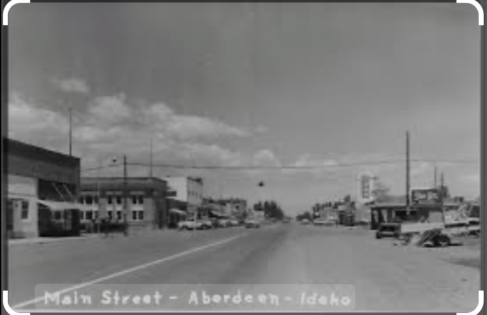

About Me
Hello! I am Halle Cooper. I was raised in a small town called Aberdeen, Idaho. I currently live with my wonderful husband of four years in Burley, Idaho. I work as a sixth grade teacher at Mountain View Elementary and a dance teacher at En Pointe. Some of my favorite things to do are travel and read.

Learn more about me and my background here!
Aberdeen, Idaho
Aberdeen, Idaho, is a charming small town located in Bingham County in southeastern Idaho. Known for its picturesque rural setting and close-knit community, Aberdeen is surrounded by expansive farmland and offers a peaceful lifestyle away from the hustle and bustle of city life. With a welcoming atmosphere and a strong sense of local pride, Aberdeen embodies the quintessential small-town experience in Idaho.
For more information on the charming town of Aberdeen, click here!
To visit their website, click here!